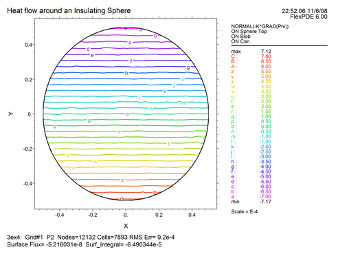

We have discussed the specification of plots on cut planes in 3D. You can, if you want, apply restrictions to the range of such plots, much like the restrictions of integrals.
You can also specify plots on extrusion SURFACES (layer interface surfaces), even though these surfaces may not be planar.
The basic control mechanism for plots is the ON <thing> statement.
For example, the statement
CONTOUR(Phi) ON 'Sphere Top' ON 'Blob'
requests a contour plot of the potential Phi on the extrusion surface named 'Sphere Top', restricted to the region 'Blob'.
CONTOUR(NORMAL(-K*GRAD(Phi))) ON 'Sphere Top' ON 'Blob' ON 'Can'
requests a contour plot of the normal component of the heat flux on the top part of the sphere, with evaluation to be made within layer 'Can', i.e., inside the sphere.
| • | In general, the qualifier ON <name> will request a localization of the plot, depending on the type of object named by <name>. |
| • | The qualifier ON REGION <number> selects a region by number, rather than by name. |
| • | The qualifier ON SURFACE <number> selects a layer interface surface by number, rather than by name. |
| • | The qualifier ON LAYER <number> selects a layer by number, rather than by name. |
As an example, let us request a plot of the heat flux on the top of the sphere, as shown above. We will add this command to the PLOTS section, and also request an integral over the same surface, as a cross check. The plot generator will automatically compute the integral over the plot grid. This computation should give the same result as the SURF_INTEGRAL, which uses a quadrature on the computation mesh.
CONTOUR(NORMAL(-K*GRAD(Phi))) ON 'Sphere Top' ON 'Blob' ON 'Can'
REPORT(SURF_INTEGRAL(NORMAL(-k*GRAD(Phi)),'Sphere Top','Blob','Can'))
AS 'Surface Flux'
The result looks like this:

Since in this case the integral is a cancellation of values as large as 7e-4, the reported "Surface Flux" value of -5.2e-8 is well within the default error target of ERRLIM=0.002. The automatically generated plot grid integral, "Surf_Integral", shows greater error at -6.49e-5, due to poorer resolution of integrating the area-weighted function in the plot plane.
Page url: index.html?moreadvancedplotcontrols.html